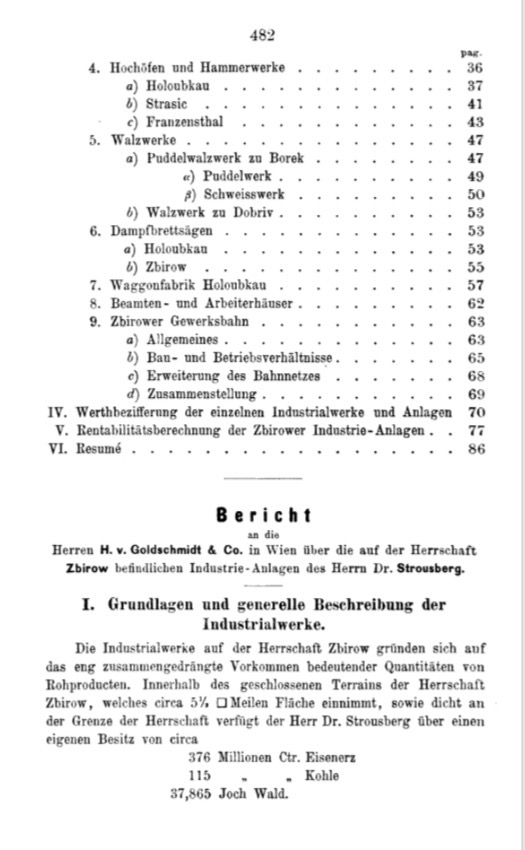
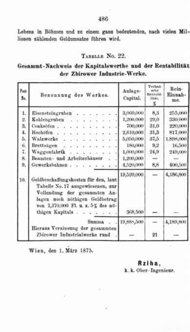
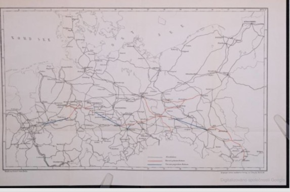

Page 482
Report to Messrs. H. v. Goldschmidt & Co. in Vienna concerning the industrial installations of Dr. Strousberg situated on the Zbirow Estate.
I. Foundations and general description of the industrial works.
The industrial works on the Zbirow Estate are based upon the closely concentrated occurrence of considerable quantities of raw materials. Within the enclosed territory of the Zbirow Estate, comprising approximately 5½ square miles, and immediately adjacent to its boundaries, Dr. Strousberg possesses approximately 376 million centners of iron ore, 115 million centners of coal, and 37,865 Joch of forest.
Zpráva pánům H. v. Goldschmidt & Co. ve Vídni o průmyslových zařízeních Dr. Strousberga na panství Zbirow.
I. Základy a všeobecný popis průmyslových závodů.
Průmyslové závody na panství Zbirow jsou založeny na soustředěném výskytu značného množství surovin. Na uzavřeném území panství Zbirow o rozloze přibližně 5½ čtvereční míle a bezprostředně při jeho hranicích disponuje Dr. Strousberg přibližně 376 miliony centů železné rudy, 115 miliony centů uhlí a 37 865 jochy lesa.
Original German is preserved in the scan above. A diplomatic transcription can be added after verification against the high-resolution source.

Page 483
The Zbirow industrial works were established to exploit these raw materials, with the iron ores forming their foundation. Using timber, coke from coal of the local district, and limestone from the Zbirow region, the ores were to be smelted and made into cast goods, rolled iron and steel goods, partly for sale and partly for further processing.
The works were designed as an interconnected system for extraction and refining, linked by standard-gauge industrial railways both to one another and to the main railway lines crossing the Zbirow region.
The report anticipated a very substantial body of officials and workers and therefore extensive installations and housing. It lists nine groups: iron-ore mining; coal mining; coke ovens; blast furnaces; rolling mills; steam sawmills; wagon factory; officials' and workers' housing; and industrial railways. Limestone quarries, clay pits and brickworks are described as auxiliary installations.
Iron mines across and near the estate — particularly at Krusnahora, Hřeben, Zaječov and Holoubkau — supplied ore to nine blast furnaces at Franzenthal, Holoubkau and Strasic. Fuel came from the Zbirow forests, eight coke ovens at Mirošchau and neighbouring sources.
Průmyslové závody Zbirow byly vybudovány k využití těchto surovin, přičemž jejich základem byla železná ruda. Ruda měla být tavena pomocí dřeva, koksu z uhlí místního revíru a vápence ze Zbirowska; výsledkem měly být odlitky, válcované železo a ocelové výrobky, částečně k prodeji a částečně k dalšímu zpracování.
Závody tvořily propojený systém těžby a zpracování spojený normálněrozchodnými průmyslovými železnicemi mezi jednotlivými provozy i s hlavními tratěmi protínajícími Zbirowsko.
Zpráva počítala s velkým počtem úředníků a dělníků a s rozsáhlým ubytováním. Uvádí devět skupin: železnorudné doly, uhelné doly, koksovací pece, vysoké pece, válcovny, parní pily, vagónku, domy pro úředníky a dělníky a průmyslové železnice.
Original German is preserved in the scan above.

Page 484
The smelted iron was used either immediately for castings or made into pig iron for further processing. For the latter purpose, rolling mills were initially established at Dobřiv near Strašice and at Borek near Zbirow.
The products were intended partly for sale and partly for further processing in the estate's thirteen puddling furnaces, for a planned bridge-construction establishment, and for the existing wagon factory at Holoubkau as well as the wagon factory at Bubna near Prague.
The two wagon factories were based on the timber wealth of the Zbirow Estate and used sawn timber from the steam sawmills at Zbirow and Holoubkau; surplus timber was exported to Bavaria and Saxony and supplied to the domestic market.
Vytavené železo sloužilo buď přímo k výrobě odlitků, nebo k výrobě surového železa pro další zpracování. Pro tento účel byly nejprve zřízeny válcovny v Dobřívě u Strašic a v Borku u Zbirowa.
Výrobky byly určeny částečně k prodeji a částečně k dalšímu zpracování ve třinácti pudlovacích pecích panství, pro plánovaný závod na stavbu mostů, pro existující vagónku v Holoubkově a také pro vagónku v Bubnech u Prahy.
Obě vagónky vycházely z lesního bohatství panství Zbirow a zpracovávaly řezivo z parních pil ve Zbirowě a Holoubkově; přebytky řeziva směřovaly do Bavorska a Saska i na domácí trh.
Original German is preserved in the scan above.

Page 485
The report projects annual production of 9–10 million centners of iron ore, 4–5 million centners of coal, about ¾ million centners of pig iron and cast goods, 1,290,000 centners of rolled goods, and 5,000–6,000 railway wagons. The coke installations were projected at about 2 million centners of coke per year and the steam sawmills at about 3½ million cubic feet of timber.
The industrial railway was expected to move about 16 million centners of goods annually for the enterprise itself. The workers' housing was said to be capable of accommodating approximately 5,000 people.
The report characterises this concentrated system, within roughly 5½ square miles and amid a branching railway network, as capable not merely of being profitable but of commanding the market and having major economic significance for Bohemia and Austria.
VI. Résumé. The following table was intended to summarise the capital movement of the Zbirow works. From a capital value of 19,520,000 guilders, 7,370,000 guilders were treated as still required to complete the installations.
Zpráva předpokládá roční těžbu 9–10 milionů centů železné rudy, 4–5 milionů centů uhlí, výrobu asi ¾ milionu centů surového železa a odlitků, 1 290 000 centů válcovaného zboží a 5 000–6 000 železničních vagónů. Koksovny měly vyrábět asi 2 miliony centů koksu ročně a parní pily asi 3½ milionu krychlových stop dřeva.
Průmyslová železnice měla pro vlastní potřeby podniku přepravovat přibližně 16 milionů centů zboží ročně. Dělnické bydlení mělo pojmout přibližně 5 000 osob.
Zpráva hodnotí tento koncentrovaný systém jako podnik schopný nejen zisku, ale také významného postavení na trhu a značného hospodářského významu pro Čechy a Rakousko.
Original German is preserved in the scan above.

Page 486
Table No. 22 — Overall statement of the capital values and profitability of the Zbirow industrial works.
The table assigns investment capital to iron-ore mines (3,060,000 fl.), coal mines (1,200,000), coke ovens (700,000), blast furnaces (2,610,000), rolling mills (5,050,000), steam sawmills (180,000), wagon factory (1,000,000), officials' and workers' housing (1,200,000), and industrial railways (4,520,000). It gives a base total of 19,520,000 guilders, with financing costs bringing the sum to 19,888,500 guilders.
Projected net income totals 4,189,800 guilders, expressed as an overall return of approximately 21%.
Vienna, 1 March 1875 — Ržiha, Imperial-Royal Senior Engineer.
Tabulka č. 22 — Celkový přehled kapitálových hodnot a rentability průmyslových závodů Zbirow.
Tabulka uvádí investiční kapitál pro železnorudné doly, uhelné doly, koksovny, vysoké pece, válcovny, parní pily, vagónku, domy pro úředníky a dělníky a průmyslové železnice. Základní součet činí 19 520 000 zlatých; po započtení nákladů na získání dalšího kapitálu 19 888 500 zlatých.
Předpokládaný čistý příjem činí celkem 4 189 800 zlatých, tedy přibližně 21 %.
Vídeň, 1. března 1875 — Ržiha, c. k. vrchní inženýr.
Original German is preserved in the scan above.
Railway map accompanying the memoir
The 1876 volume was published with a photograph and an Eisenbahn-Karte (railway map). The map should be presented here as context for the geographical scale of Strousberg's railway activity. A high-resolution copy and verified reading of its colour legend are still required before assigning precise meanings to the individual coloured routes.
Bibliographic source: Bethel Henry Strousberg, Dr. Strousberg und sein Wirken: von ihm selbst geschildert, Berlin: J. Guttentag (D. Collin), 1876, 486 pp., with photograph and railway map.